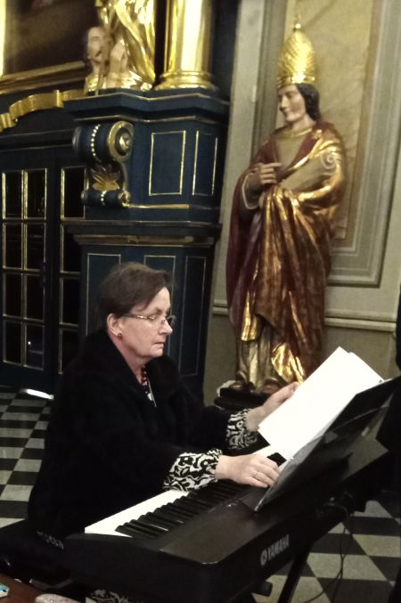
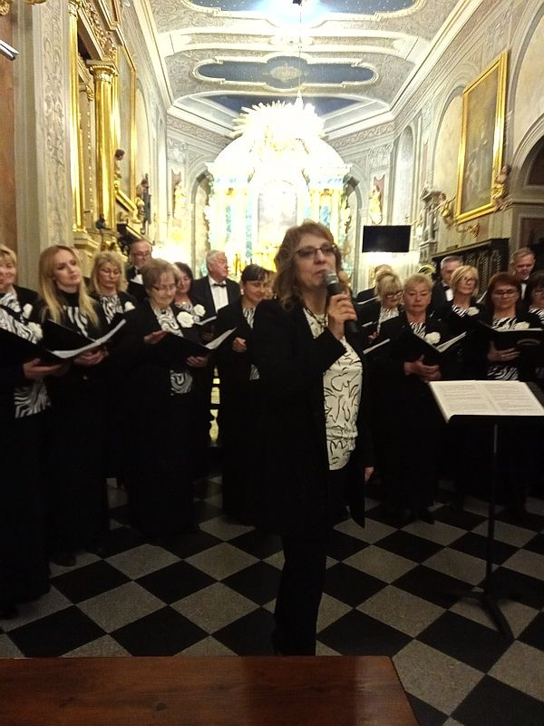
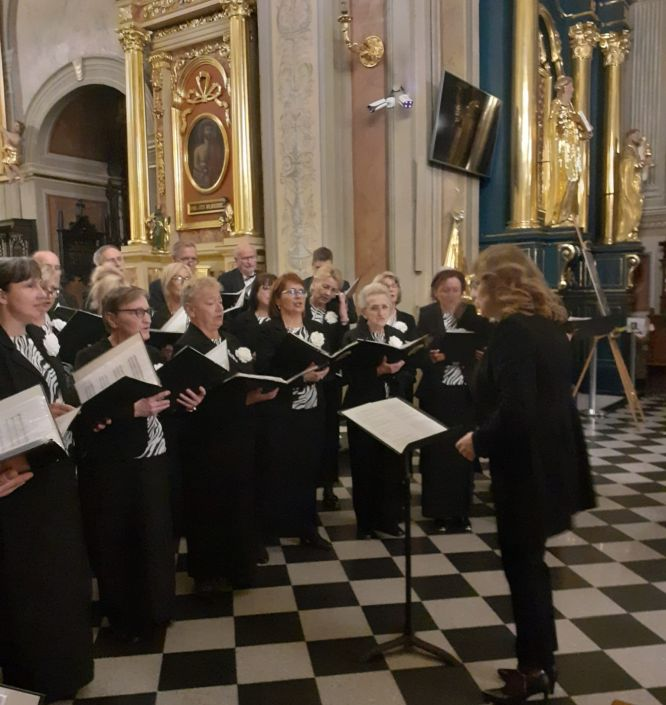

A tymczasem w Cameracie...
.
2022-03-26
26 marca 2022 r. wielicki chór Camerata pod dyrekcją Izabeli Szoty, przy akompaniamencie Agnieszki Korczyńskiej (fortepian), wystąpił w Kościele Św. Klemensa w repertuarze sakralnym.
Koncert zespołu, działającego pod patronatem Wielickiego Centrum Kultury, wpisany był w obchody jubileuszu 25-lecia chóru.
 
Układ koncertu nawiązywał do schematu mszy, który został ustalony już w VI wieku.Ordinarium missae (części stałe: Kyrie, Gloria, Sanctus, Benedictus, Agnus Dei) stanowiła Msza ku czci Św.Cecylii, patronki śpiewu chóralnego, francuskiego kompozytora Augusta Cheriona.
Credo to fragment Mszy G-dur Franza Schuberta. Messe en l’honneur de Ste Cecile A. Cheriona Camerata miała zaszczyt wykonać w 2008 r. w paryskiej Świątyni Chwały - kościele Św. Magdaleny z okazji 200. rocznicy utworzenia przez Napoleona Księstwa Warszawskiego.
Proprium missae (części zmienne: Introit, Graduale, Alleluja, Offertorium, Communio, Ite missa est) stanowiły utwory Jana Sebastiana Bacha, Cesara Francka, Charlesa Gounoda, Mikołaja Gomółki, Stanisława Moniuszki, Wolfganga Amadeusza Mozarta, Camila Saint-Saensa.

W ten sposób Camerata wyraziła podziękowanie za 25 lat wspólnego śpiewania, wspomniała tych, którzy odeszli z jej szeregów i zapewne śpiewają w chórach anielskich (Anna Augustynek – była Prezes, Anna Krawiec, Marek Bzowski, Adam Kwapień, Józef Markielowski, Kazimierz Ptasznik) oraz modliła się o pokój, cytując słowa Św. Jana Pawła II, wielkiego orędownika pokoju i praw człowieka, pierwszej osoby, która w zakresie pokojowej transformacji świata dokonała rzeczy zupełnie nieprawdopodobnych, angażując się niejednokrotnie w rozwiązywanie konkretnych konfliktów:
"Cierpienie jest w świecie również po to, żeby wyzwolić w nas miłość, ów hojny i bezinteresowny dar z własnego "ja" na rzecz tych, których dotyka cierpienie" (List apostolski Salvifici Doloris, 1984).Tekst: Izabela Szota

© Stowarzyszenie Muzyczne Chór Camerata Wieliczka
Prowadzenie strony oraz zdjęcia: Małgorzata Wysocka